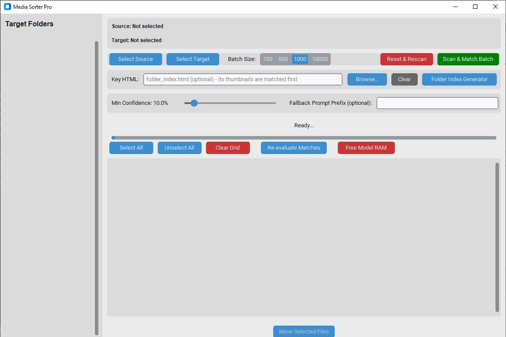

Stop sorting by hand
Camera rolls, downloads and chat exports pile up fast. Media Ledger learns your folder structure and proposes where every file belongs, then moves only what you approve.
Understands your pictures
Uses the CLIP vision-language model to classify images and video frames against your own folder names, with no training or tagging required.
Matches by example
Optionally point it at a folder-index HTML of thumbnails. Files that visually resemble a thumbnail are routed to that folder first.
Knows filename patterns
Screenshots, Pixel, WhatsApp, Snapchat, iOS and DSLR camera naming conventions are recognized as a dependable fallback.
Skips duplicates
Perceptual and full-file hashes are recorded in a local ledger, so media you have already processed is not offered again.
Explains every decision
Click any thumbnail for a diagnostic report: strategy used, confidence score, top three folder guesses and the prompt that matched.
Private and local
The model is downloaded once, then runs entirely on your PC. Your media is never uploaded anywhere.

How it works
Each file passes through three stages until one is confident enough to decide.
- Choose a source and a targetYour target folder's subfolders become the categories. Pick a batch size to process a manageable set at a time.
- Scan & Match BatchFiles are hashed, checked against the ledger, and matched. Curated prompts are tried first, with a fallback prompt pass if confidence is low.
- Review the gridThumbnails show the proposed folder. Select or unselect files, reassign any file from its predicted folders, or re-evaluate after changing settings.
- Move Selected FilesApproved files are moved into place and recorded in the ledger for future runs.
Highlights
Control over accuracy and speed.
Adjustable confidence
A Min Confidence slider (0–100%) decides how sure the AI must be before it proposes a folder.
Fallback prompt prefix
Add your own wording to steer folders that do not have a curated prompt.
Folder Index Generator
Built-in companion tool that creates the key HTML from your already-sorted folders.
Memory friendly
Free the model from RAM with one click; it reloads from the local copy on the next scan.
Full-size preview
Zoomable viewer for double-checking a file before it is moved.
Crash logging
Native crash details are written to a log file so problems can be diagnosed.
Specifications
| Supported media | PNG, JPG, JPEG, HEIC, MP4, MOV |
|---|---|
| AI model | OpenAI CLIP ViT-L/14 (about 1.7 GB, most accurate); can be switched to ViT-B/32 (about 600 MB) for lighter machines |
| Interface | Desktop GUI built with CustomTkinter |
| Storage | Local SQLite ledger of filenames, paths, hashes and run dates |
| Model location | Downloaded once to a folder you choose (such as a secondary drive), then loaded locally |
| Distribution | Runs as a Python script or as a packaged installed app |